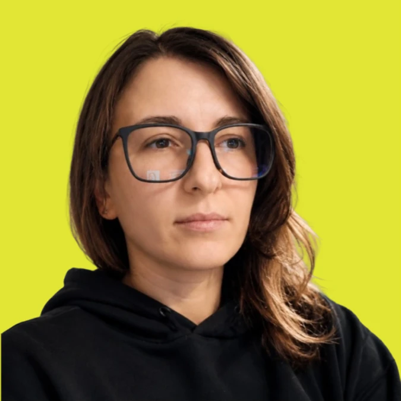
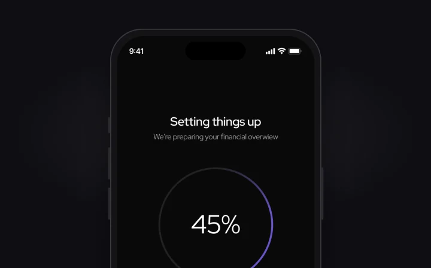
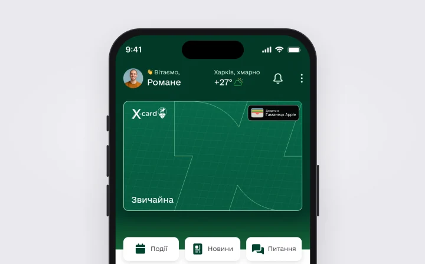

Subscription payments built around processing, failed and timeout states, refined after four usability tests.
Read the case – LunoraProduct Designer
FinTechOutdoorHospitalityCivicTechHealthTechLogisticsTravelInvestment platformLunoraUlovoTripStoneGORAOpen KharkivNumaNova Poshta
Rings 2024 → 2026, inside out · Grey caps – domain · – selected7 projects. Rings 2024 → 2026, inside out. Full list in Work.
Onboarding · Payment states · Accessibility
No visuals – NDA
Investment platform
Sole designer. Investor questionnaire: 7 steps to 3.
No visuals – NDA
About

I design the parts of a product people notice only when they break – how screens connect, what happens while something loads or fails, and the words on every button and error.
- Product designer at Involve.software
- The only designer on an investment platform
- Also an AI B2B SaaS and a medical app
- Freelance since 2024
- MA in Design, Lviv Academy of Arts
- Based in Fano, Italy

Bite forecast for anglers: activity by the hour, weather and moon. 12 flows and 86 screens, in development.
Read the case – Ulovo
Kharkiv’s city app, redesigned with one other designer. Four colour modes on one token set, text holds up at 160%.
Read the case – Open Kharkiv
An AI travel planner: discovery with Amplitude, competitors and accessibility, then the unlock flow and trip settings.
Read the case – TripStone
A website with booking for forest cabins in West Virginia, from home page to booking flow. Live at gorastay.com.
Read the case – GORAAlso Numa, Nova Poshta and an investment platform under NDA
See all projects
Focus
What I’m strongest at
7 steps to 3.
Optional steps moved into account settings, so investors finish onboarding first and fill in the rest later.

Processing, failed, timeout.
2 of 4 people couldn’t tell what was happening during long processing or whether they could close the screen. A progress ring with checkmarks fixed both.

Still readable at 160%.
Transport and citizen appeals, redesigned so the interface holds up when people scale text to 160%.
Track record
New to the title.
New to the title.
Not new to building things.
10 years running my own brand
N.I.N.A.Design, fashion and lifestyle.
From 2013 to 2024 – before I moved into product design.
32 commercial websites
Client and studio work.
Including GORA, a forest cabin site with booking, launched on Webflow.
5 mobile apps
HealthTech, FinTech, CivicTech, Outdoor.
Numa, Open Kharkiv, Ulovo, Lunora and an investment platform under NDA.
770+ people in the club
Product Design Club.
A community I founded and run, with weekly design coffees.
8 mentorships
One-to-one, with designers.
I also write about product design, accessibility and AI on DOU.